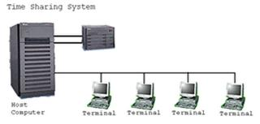

Pengertian dan Contoh dari Distributed Processing
Distributed Processing adalah kemampuan menjalankan semua proses pengolahan data secara bersama antara komputer yang berfungsi sebagai pusat dengan beberapa komputer yang lebih kecil dan saling dihubungkan melalui jalur komunikasi.
Setiap komputer tersebut memiliki prosesor mandiri sehingga mampu mengolah sebagian data secara terpisah, kemudian hasil pengolahan tadi digabungkan menjadi satu penyelesaian total. Jika salah satu prosesor mengalami kegagalan atau masalah maka prosesor yang lain akan mengambil alih tugasnya.
Dalam proses distribusi sudah mutlak diperlukan perpaduan yang mendalam antara teknologi komputer dan telekomunikasi, karena selain proses yang harus didistribusikan, semua host komputer wajib melayani terminal-terminalnya dalam satu perintah dari komputer pusat.
Sejarah Distributed Processing
Konsep jaringan komputer lahir pada tahun 1940-an di Amerika pada sebuah proyek pengembangan komputer MODEL I di laboratorium Bell dan group riset Harvard University. Proyek ini dipimpin oleh profesor H. Aiken. Pada mulanya proyek ini hanyalah ingin memanfaatkan sebuah perangkat komputer yang harus digunakan bersama.
Pada tahun 1950-an ketika jenis komputer mulai membesar sampai terciptanya super komputer. Saat itu dikenalkan sebuah konsep untuk menghubungkan komputer yang saling tersebar. Konsep tersebut adalah konsep distribusi proses berdasarkan waktu yang dikenal dengan nama Time Sharing System (TSS), maka untuk pertama kali bentuk jaringan (network) komputer diaplikasikan. Pada sistem TSS beberapa terminal (komputer) terhubung secara seri ke sebuah host komputer. Dalam proses TSS mulai nampak perpaduan teknologi komputer dan teknologi telekomunikasi yang pada awalnya berkembang sendiri-sendiri.
Gambar 1. Jaringan Komputer Model TSS.
Memasuki tahun 1970-an, setelah beban pekerjaan bertambah banyak dan harga perangkat komputer besar mulai terasa sangat mahal, maka mulailah digunakan konsep proses distribusi (Distributed Processing). Seperti yang ada pada gambar 2, dalam proses ini beberapa host komputer mengerjakan sebuah pekerjaan besar secara paralel untuk melayani beberapa terminal yang tersambung secara seri disetiap host komputer.
Dalam proses distribusi sudah mutlak diperlukan perpaduan yang mendalam antara teknologi komputer dan telekomunikasi, karena selain proses yang harus didistribusikan, semua host komputer wajib melayani terminal-terminalnya dalam satu perintah dari komputer pusat.
Gambar 2. Jaringan Komputer Model Distributed Processing.
Perjalanan sejarah komputer ukuran hardware komputer dari tahun ke tahun mengalami perkembangan pesat. Hal ini disadari dengan kemampuan yang semakin tinggi dan ukuran yang semakin kecil. Saat ini komputer dan jaringannya sudah dapat menangani proses komunikasi antar komputer (Peer to Peer System) tanpa melalui komputer pusat. Untuk itu, mulailah berkembang teknologi jaringan lokal yang dikenal dengan sebutan LAN. Demikian pula ketika Internet mulai diperkenalkan.
-
Jadi model awal-awal jaringan komputer adalah:
- Model I, yang hanya memanfaatkan computer untuk digunakan secara bersama.
- Model TSS ( Time System Sharing ), beberapa terminal (komputer) terhubung secara seri ke sebuah host computer.
- Model Distributed Processing, beberapa host komputer mengerjakan sebuah pekerjaan besar secara paralel untuk melayani beberapa terminal yang tersambung secara seri disetiap host komputer.
Contoh Distributed Processing
Suatu komputer yang dirancang untuk tugas-tugas melaksanakan proyek, analisis finansial, penjadwalan waktu dan akuntansi , biasanya data komputer tersebut dapat diakses oleh beberapa orang secara bersama-sama.
Contoh lainnya, pengolahan data pada server yahoo yang tersebar hampir di seluruh dunia secara distribusi, setiap wilayah mempunyai server masing-masing. Seperti di indonesia mempunyai server tersendiri sehingga pengolahan data tidak di pusat melainkan di wilayah masing-masing, dll.
Kelebihan Dan Kekurangan Distributed Processing
-
Kelebihan sistem terdistribusi
- Pertukaran sumber daya (prosesor)
- Pertukaran data
- Struktur geografis
- Penyederhanaan logika
- Modular
- Reliabel
- Biaya Rendah
-
Kelemaham isitem terdistribusi
- Biaya komunikasi membengkak
- Pemaduan yang sulit
- Pembuatan program yang lebih sulit
Kegunaan Dari Distributed Processing
- Butuh berbagi data dan resource di antara pemakai
- Mendukung komunikasi person-to-person
- Fleksibilitas : komputer yang berbeda dengan kemampuan yang berbeda dapat di share antar user
Contoh penerapan Distributed System
- Small Area Network (SAN)
- Local Area Network (LAN)
- Metropolitan Area Network (MAN)
- Online Service (OL) / Outernet
- Wide Area Network (WAN) / International Network (Internet)
References:
https://verenaprillia.blogspot.com/p/blog-page_91.html

Dinda Putri Ramadani
Hai!!! Perkenalkan saya Dinda Putri Ramadani salah satu mahasiswi dari Universitas Dinamika Bangsa Jambi. Blog ini untuk memenuhi tugas Sistem Operasi yang diberikan oleh dosen pembimbing saya. Terima Kasih!!! xixixi